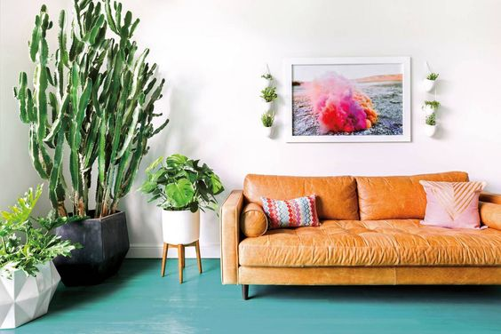
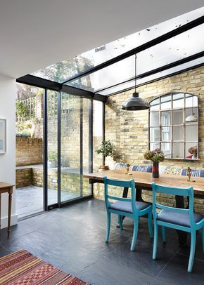
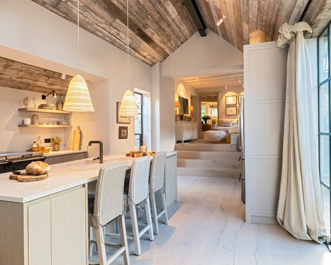
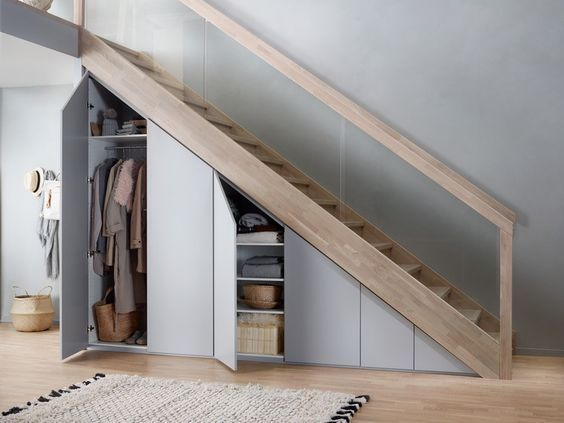
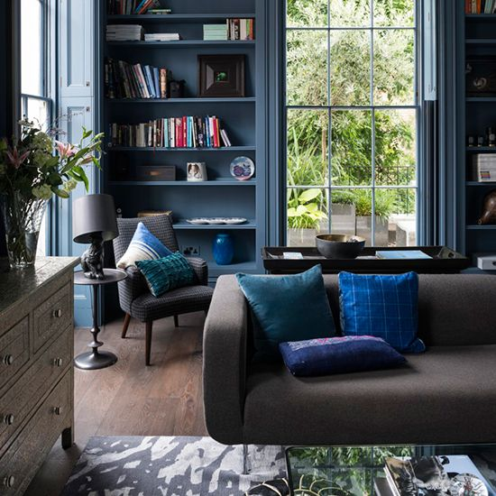

No.103
A busy road outisde but plenty of opportunities to make it all fade into the background in this cosy 4 bed terraced house
No.11
A petite maisonette in a quiet hamlet which transformed from a close and cluttered space to an airy, bright sancturary

Flat 3
A tight inner-city space proved a beautiful challenge
No.45
This 8 bedroom townhouse has a fresh character in each room, yet all is tied together by the uniting theme of the client's special interest